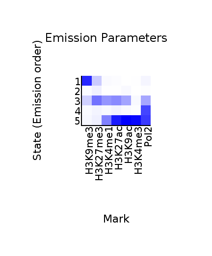
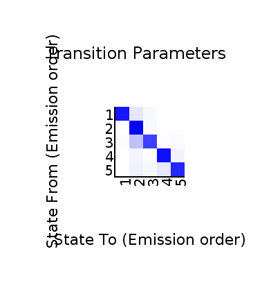
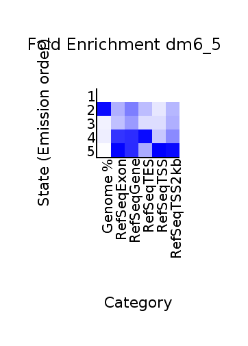
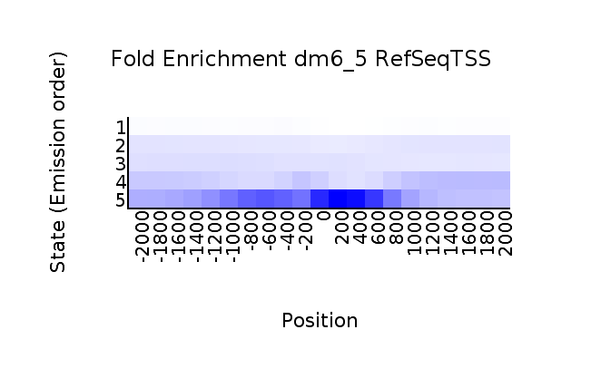
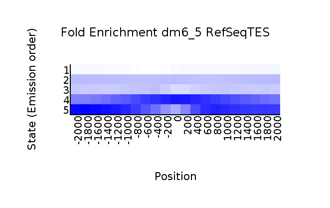

<center><h1>ChromHMM Report</h1></center>
Input Directory: BinaryBAM/<br>
Output Directory: LearnModelOutput_5states<br>
Number of States: 5<br>
Assembly: dm6<br>
Full ChromHMM command: LearnModel BinaryBAM/ LearnModelOutput_5states 5 dm6
<h1>Model Parameters</h1>
<br>
<li><a href="emissions_5.svg">Emission Parameter SVG File</a><br>
<li><a href="emissions_5.txt">Emission Parameter Tab-Delimited Text File</a><br>
<br>
<li><a href="transitions_5.svg">Transition Parameter SVG File</a><br>
<li><a href="transitions_5.txt">Transition Parameter Tab-Delimited Text File</a><br><br>
<li><a href="model_5.txt">All Model Parameters Tab-Delimited Text File</a> <br>
<h1>Genome Segmentation Files</h1>
<li><a href="dm6_5_segments.bed">dm6_5 Segmentation File (Four Column Bed File)</a><br>
<br>
Custom Tracks for loading into the <a href="http://genome.ucsc.edu">UCSC Genome Browser</a>:<br>
<li><a href=dm6_5_dense.bed>dm6_5 Browser Custom Track Dense File</a> <br>
<li><a href=dm6_5_expanded.bed>dm6_5 Browser Custom Track Expanded File</a><br>
<h1>State Enrichments</h1>
<h2>dm6_5 Enrichments</h2>
 <br>
<li><a href="dm6_5_overlap.svg">dm6_5 Overlap Enrichment SVG File</a><br>
<li><a href="dm6_5_overlap.txt">dm6_5 Overlap Enrichment Tab-Delimited Text File</a><br>
 <br>
<li><a href="dm6_5_RefSeqTSS_neighborhood.svg">dm6_5_RefSeqTSS_neighborhood Enrichment SVG File</a><br>
<li><a href="dm6_5_RefSeqTSS_neighborhood.txt">dm6_5_RefSeqTSS_neighborhood Enrichment Tab-Delimited Text File</a><br>
 <br>
<li><a href="dm6_5_RefSeqTES_neighborhood.svg">dm6_5_RefSeqTES_neighborhood Enrichment SVG File</a><br>
<li><a href="dm6_5_RefSeqTES_neighborhood.txt">dm6_5_RefSeqTES_neighborhood Enrichment Tab-Delimited Text File</a><br>
